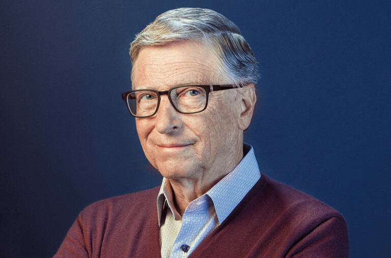

Bill Gates
William Henry Gates III, (Seattle, 1955). Conocido como Bill Gates. Fue un empresario, informático y filántropo estadounidense. Fundó la compañía de software Microsoft junto con Paul Allen. Desarrolló el sistema operativo MS-DOS en 1981, que posteriormente se convirtió en Windows 3.1 en 1992. Este sistema operativo evolucionó en múltiples versiones mejoradas que continúan integradas en multitud de ordenadores actuales. Sus contribuciones incidieron de forma determinante en la creación de la Sociedad de la Información y del Conocimiento.
Su fortuna se calcula en 96.6 mil millones de dólares (2019) según la revista Forbes, hecho que le coloca como el cuarto hombre más rico del mundo. Antes del estallido de la burbuja de las punto com, su patrimonio neto ascendió a 114 100 millones de dólares, lo que lo convirtió en la décima persona más rica en toda la historia de la humanidad.
Ha sido criticado por sus tácticas de negocios, que han sido consideradas anticompetitivas, una opinión que en algunos casos ha sido mantenida por numerosas sentencias judiciales.
Biografía
William Henry Gates III nació el 28 de octubre de 1955. Es hijo de William H. Gates, Sr. (William Henry Gates II), un destacado abogado, y de Mary Gates, profesora de la Universidad de Washington y directora del First Interstate Bank. Con ellos y su hermana, dos años mayor, vivió en la ciudad de Seattle, en el estado de Washington. Hasta sexto grado fue alumno regular de un colegio público.
Cursó estudios en la escuela privada de élite de Lakeside, en Seattle, esta escuela tenía ya una computadora en el año 1968, lo que le permitió a Gates tomar contacto con la máquina y aficionarse a la informática. También en Lakeside conoció a Paul Allen, con quien más tarde fundaría Microsoft.
El 4 de abril de 1975, siendo aún estudiante en la Universidad de Harvard crea la empresa de software Microsoft. En 1976 abandonó la universidad y se trasladó a Albuquerque, sede de MITS, para pactar con esa empresa la cesión del 50 % del lenguaje para computadoras Basic. Al año siguiente, se enteró del éxito de la empresa Apple y de que necesitaban un intérprete de Basic.
En 1980, se reunió con representantes de IBM en Seattle. Ellos querían contar con el sistema operativo CP/M. Él les comento de la existencia de una versión adaptada llamada QDOS u 86DOS, comprometiéndose a conseguir una licencia no exclusiva a fin de adaptarla. Con ello, consiguió venderles la idea del sistema operativo MS-DOS, sin contar con esta, comprando la 86DOS a muy bajo precio al joven programador Tim Paterson. IBM necesitaba ese sistema operativo para competir con Apple, razón por la cual la negociación fue flexible. Microsoft quiso los derechos de licencia, mantenimiento, e incluso la facultad de vender el DOS a otras compañías. IBM aceptó, considerando que lo que produciría dividendos sería el hardware y no el software. Unos días después, Microsoft compró los derechos de autor del QDOS a Tim Paterson, que trabajaba para la Seattle Computer Products, por 50 000 dólares, que vendió a IBM como MS-DOS (Microsoft DOS). Lo que llama poderosamente la atención fue que IBM no comprara el MS-DOS sino que decidiera pagar a Microsoft un canon por cada copia que se vendiera junto con un IBM-PC.
Consciente de la importancia del entorno gráfico que había mostrado Apple (originalmente la interfaz gráfica y el "ratón" fueron desarrollados por Xerox PARC) en su ordenador Lisa, se propuso conseguir también el entorno gráfico y el "ratón" para operarlo. Mientras, Steve Jobs, fundador de Apple, iniciaba el desarrollo del Macintosh, Bill Gates visitó Apple. Ofrecía mejorar sus hojas de cálculo y otros programas. Amenazaba con vender su material informático a IBM, con lo que obtuvo una alianza Apple-Microsoft Microsoft obtuvo legalmente la tecnología del entorno gráfico y del ratón, y sacó al mercado Microsoft Windows, como directo competidor de Macintosh.
Desde comienzos de siglo, el sistema operativo Microsoft Windows (en todas sus versiones) se utiliza en la mayor parte de ordenadores personales del planeta.
Vida personal
En 1985 Gates fue nombrado uno de los «50 solteros más codiciados» por Good Housekeeping. Se casó con Melinda French el 1 de enero de 1994 y tuvieron tres hijos: Jennifer Katharine (1996), Rory John (1999) y Phoebe Adele (2002). La familia reside en su casa en la ladera de una colina con vistas al lago Washington, en Medina. En marzo de 2014, en una entrevista de la revista Rolling Stone, Gates señaló que, en cuanto a su fe, «los sistemas morales de la religión, creo, son super importantes. Hemos criado a nuestros hijos de una manera religiosa». En la misma entrevista, Gates dijo: «Creo que tiene sentido creer en Dios, pero exactamente qué decisión en tu vida haces de manera diferente a causa de ello, no lo sé». En otra entrevista a principios de 2014, Gates afirmó que si el cielo existiera él estaría «gratamente sorprendido».18 Según otras fuentes, Gates (que nació en el seno de una iglesia protestante), es ahora fuertemente agnóstico.
Desde 2008, año en que dejó de dirigir Microsoft, ha participado en algunos proyectos para poder difundir este estilo de vida. En este sentido, junto a Peter Thiel (cofundador de la empresa PayPal), ha respaldado la creación de huevos artificiales a base de plantas fáciles de cultivar. También aseguró, en una ocasión previa, que «el futuro de la carne es vegano», lo cual va en sintonía con una propuesta que había hecho para crear semillas transgénicas que tuviesen sabor a carne.
Desde 2007 Bill Gates ocupaba el segundo lugar en la lista anual de las mayores fortunas personales realizada por la revista Forbes, detrás del empresario mexicano Carlos Slim, pero debido a fluctuaciones en el patrimonio de estos dos magnates, sus fortunas quedaron en 72 700 y 72 100 millones de dólares respectivamente, según el Bloomberg Billionaires Index de mayo de 2013. En 1994, adquirió un manuscrito de Leonardo da Vinci (el Códice Hammer, también llamado Códice Leicester) por 30 millones de dólares.
En septiembre del 2019 Netflix lanzó una serie documental titulada "Bill Gates bajo la lupa", dirigida por Davis Gunggenheim, que busca entender como funciona el cerebro del creador de Microsoft.
El 3 de mayo de 2021 anunció el fin del matrimonio con Melinda French, tras 27 años de matrimonio, a través de un mensaje publicado en su cuenta personal de Twitter. Si bien ponen fin a su relación personal, continuarán trabajando juntos en la Fundación Bill y Melinda Gates.